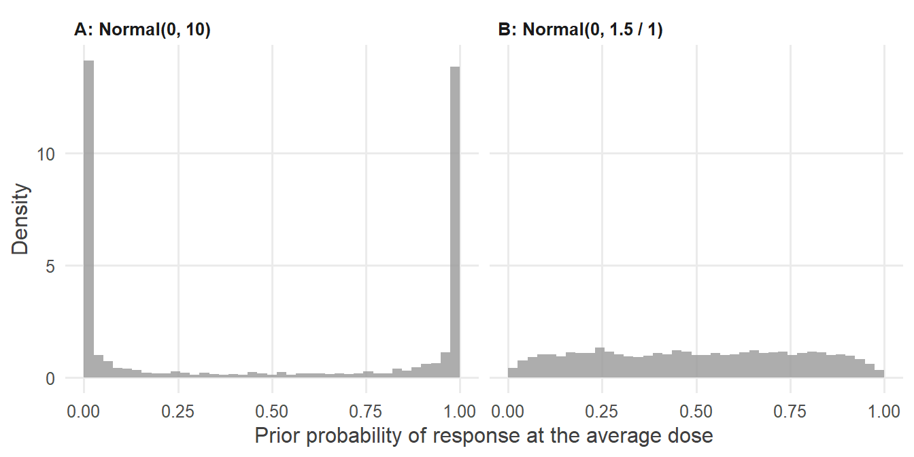
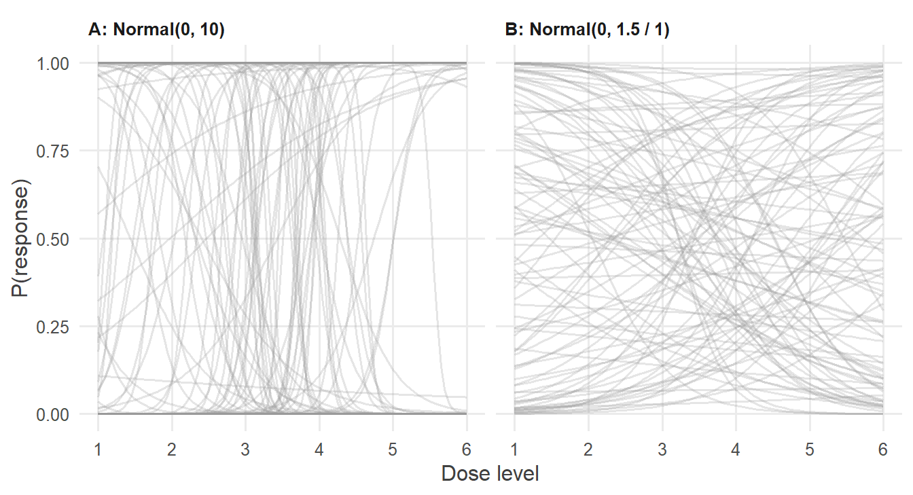
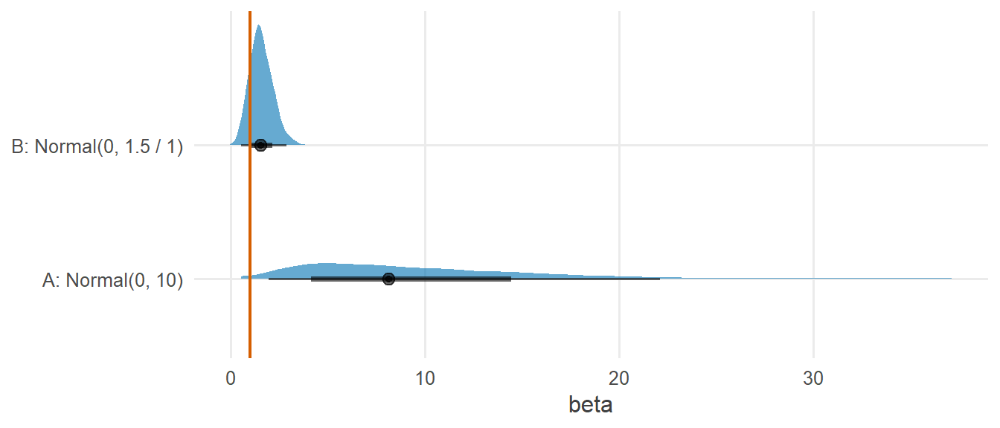
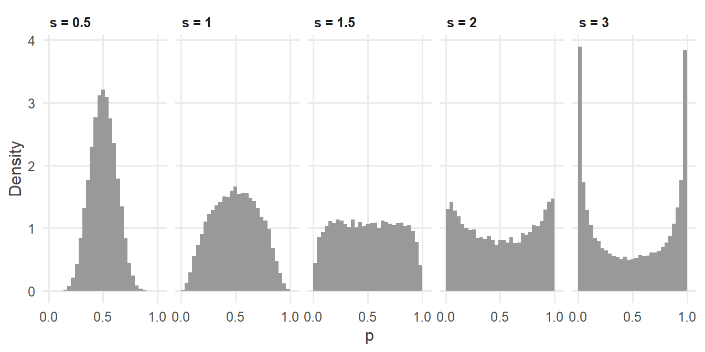

library(tidyverse)
library(cmdstanr)
library(posterior)
library(tidybayes)
source("R/theme.R")
source("R/utils.R")第 8 章 先验与先验预测检查
“无信息先验”真的没有信息吗？为什么 logit 尺度上的宽先验会把概率推向 0 和 1？怎样在看数据之前检查先验？
到目前为止，每一章的先验都是“给定”的，比如 \(\operatorname{Normal}(0, 1.5)\)、\(\operatorname{Exponential}(0.2)\)，我们一直把“为什么选它”往后推。本章正面回答这个问题。
核心观点只有一句：先验是关于参数的陈述，但我们对世界的认识往往是关于数据的。所以，检查先验最好的方式，是看它在数据尺度上意味着什么。
1 本章要回答的问题
- 先验应该怎么选？“无信息先验”真的没有信息吗？
- 为什么 logit 尺度上的宽先验，会把概率推向 0 和 1？
- 什么是先验预测检查？为什么要在看数据之前先模拟？
- 什么时候先验对结论影响很大？
2 公式卡片
Logistic 回归，先验标准差可调
\[ \begin{aligned} y_i &\sim \operatorname{Bernoulli}(p_i), \qquad \operatorname{logit}(p_i) = \alpha + \beta\, x_i \\[4pt] \alpha &\sim \operatorname{Normal}(0,\ s_\alpha) \\ \beta &\sim \operatorname{Normal}(0,\ s_\beta) \end{aligned} \]
比较两组先验：
| \(s_\alpha\) | \(s_\beta\) | 名称 | |
|---|---|---|---|
| A | 10 | 10 | “宽”先验（常被当作无信息） |
| B | 1.5 | 1 | 弱信息先验 |
先验预测分布：先从先验中抽取参数，再用这组参数生成数据：
\[ \alpha^{(s)}, \beta^{(s)} \sim p(\alpha, \beta), \qquad y^{(s)} \sim p(y \mid \alpha^{(s)}, \beta^{(s)}) \]
它回答的问题是：在看到任何数据之前，模型认为数据会长什么样？
3 模拟数据
研究情境：一项早期的小规模临床试验，12 名患者分别接受 6 个剂量水平中的一个（每个剂量 2 人），记录是否出现治疗反应。剂量以平均水平 3.5 为中心。
set.seed(2026)
alpha_true <- 0 # log-odds of response at the average dose
beta_true <- 1 # change in log-odds per dose level
sim_data <- tibble(
dose = rep(1:6, each = 2),
x = dose - 3.5,
response = rbinom(12, size = 1, prob = plogis(alpha_true + beta_true * x))
)
sim_data |> select(dose, response) |> t()#> [,1] [,2] [,3] [,4] [,5] [,6] [,7] [,8] [,9] [,10] [,11] [,12]
#> dose 1 1 2 2 3 3 4 4 5 5 6 6
#> response 0 0 0 0 0 0 1 0 1 1 1 1这份数据有一个特点：低剂量的 6 名患者全部无反应，高剂量的 6 名中有 5 名有反应。剂量与反应几乎被“一刀切开”，这在统计上叫作准完全分离，在小样本的二分类数据中很常见。
4 Stan 代码
// Chapter 8: Logistic regression with adjustable priors and a prior-only switch
//
// y_i ~ Bernoulli(inv_logit(alpha + beta * x_i)) (skipped if prior_only = 1)
// alpha ~ Normal(0, alpha_sd)
// beta ~ Normal(0, beta_sd)
data {
int<lower=0> N; // number of patients
vector[N] x; // dose, centered
array[N] int<lower=0, upper=1> y; // 1 = responded, 0 = did not respond
real<lower=0> alpha_sd; // prior SD of the intercept
real<lower=0> beta_sd; // prior SD of the slope
int<lower=0, upper=1> prior_only; // 1 = ignore the data (prior predictive check)
}
parameters {
real alpha; // log-odds of response at the average dose
real beta; // change in log-odds per dose unit
}
model {
// Priors
target += normal_lpdf(alpha | 0, alpha_sd);
target += normal_lpdf(beta | 0, beta_sd);
// Likelihood, switched off for the prior predictive check
if (!prior_only) {
target += bernoulli_logit_lpmf(y | alpha + beta * x);
}
}
generated quantities {
real p_avg = inv_logit(alpha); // response probability at the average dose
array[N] int y_rep = bernoulli_logit_rng(alpha + beta * x);
}这个程序有两个新设计：
- 先验标准差作为数据传入（
alpha_sd、beta_sd）。这样同一个程序可以在不同先验下运行，不必反复修改、重新编译。 prior_only开关：设为 1 时跳过似然，Stan 抽取的就是先验本身，generated quantities中的y_rep就是先验预测数据。这是做先验预测检查的标准写法。
model {
// Priors
target += normal_lpdf(alpha | 0, alpha_sd);
target += normal_lpdf(beta | 0, beta_sd);
// Likelihood, switched off for the prior predictive check
if (!prior_only) {
target += bernoulli_logit_lpmf(y | alpha + beta * x);
}
}5 R 端运行
把四种组合（两组先验 × 是否使用数据）都跑一遍：
mod_prior <- cmdstan_model("stan/ch08_logistic_prior.stan")
settings <- tribble(
~prior, ~alpha_sd, ~beta_sd,
"A: Normal(0, 10)", 10, 10,
"B: Normal(0, 1.5 / 1)", 1.5, 1
)
run_fit <- function(alpha_sd, beta_sd, prior_only) {
mod_prior$sample(
data = list(
N = nrow(sim_data), x = sim_data$x, y = sim_data$response,
alpha_sd = alpha_sd, beta_sd = beta_sd, prior_only = prior_only
),
seed = 2026, chains = 4, parallel_chains = 4, refresh = 0
)
}
fits <- settings |>
cross_join(tibble(prior_only = c(1, 0))) |>
mutate(fit = pmap(list(alpha_sd, beta_sd, prior_only), run_fit))#> Running MCMC with 4 parallel chains...
#>
#> Chain 1 finished in 0.0 seconds.
#> Chain 2 finished in 0.0 seconds.
#> Chain 3 finished in 0.0 seconds.
#> Chain 4 finished in 0.0 seconds.
#>
#> All 4 chains finished successfully.
#> Mean chain execution time: 0.0 seconds.
#> Total execution time: 0.4 seconds.
#>
#> Running MCMC with 4 parallel chains...
#>
#> Chain 1 finished in 0.0 seconds.
#> Chain 2 finished in 0.0 seconds.
#> Chain 3 finished in 0.0 seconds.
#> Chain 4 finished in 0.0 seconds.
#>
#> All 4 chains finished successfully.
#> Mean chain execution time: 0.0 seconds.
#> Total execution time: 0.3 seconds.
#>
#> Running MCMC with 4 parallel chains...
#>
#> Chain 1 finished in 0.0 seconds.
#> Chain 2 finished in 0.0 seconds.
#> Chain 3 finished in 0.0 seconds.
#> Chain 4 finished in 0.0 seconds.
#>
#> All 4 chains finished successfully.
#> Mean chain execution time: 0.0 seconds.
#> Total execution time: 0.3 seconds.
#>
#> Running MCMC with 4 parallel chains...
#>
#> Chain 1 finished in 0.0 seconds.
#> Chain 2 finished in 0.0 seconds.
#> Chain 3 finished in 0.0 seconds.
#> Chain 4 finished in 0.0 seconds.
#>
#> All 4 chains finished successfully.
#> Mean chain execution time: 0.0 seconds.
#> Total execution time: 0.2 seconds.6 后验整理与可视化
6.1 先验在概率尺度上长什么样？
先只看截距。\(\alpha\) 决定了平均剂量下的反应概率 \(p = \operatorname{logit}^{-1}(\alpha)\)。两种先验下，\(p\) 的先验分布是：
fits |>
filter(prior_only == 1) |>
mutate(draws = map(fit, \(f) spread_draws(f, p_avg))) |>
select(prior, draws) |>
unnest(draws) |>
ggplot(aes(x = p_avg)) +
geom_histogram(aes(y = after_stat(density)), bins = 40, boundary = 0,
fill = f2s_colors[["prior"]], alpha = 0.8) +
facet_wrap(~ prior) +
labs(x = "Prior probability of response at the average dose", y = "Density")
\(\operatorname{Normal}(0, 10)\) 在 logit 尺度上看起来“很宽、很平”，但换算到概率尺度上，它几乎只说了一件事：反应概率要么接近 0，要么接近 1。
fits |>
filter(prior_only == 1) |>
mutate(draws = map(fit, \(f) spread_draws(f, p_avg))) |>
select(prior, draws) |>
unnest(draws) |>
group_by(prior) |>
summarise(prop_below_0.05_or_above_0.95 = mean(p_avg < 0.05 | p_avg > 0.95))#> # A tibble: 2 × 2
#> prior prop_below_0.05_or_above_0.95
#> <chr> <dbl>
#> 1 A: Normal(0, 10) 0.769
#> 2 B: Normal(0, 1.5 / 1) 0.0505宽先验下，大部分先验质量落在 \(p < 0.05\) 或 \(p > 0.95\) 的极端区域。这绝不是“无信息”，而是一个很强、并且通常不合理的假设。
6.2 先验预测检查：剂量–反应曲线
再把斜率也考虑进来。从先验中抽取 100 组 \((\alpha, \beta)\)，各画一条剂量–反应曲线：
x_grid <- tibble(x = seq(-2.5, 2.5, length.out = 101))
fits |>
filter(prior_only == 1) |>
mutate(draws = map(fit, \(f) spread_draws(f, alpha, beta, ndraws = 100, seed = 2026))) |>
select(prior, draws) |>
unnest(draws) |>
cross_join(x_grid) |>
mutate(p = plogis(alpha + beta * x)) |>
ggplot(aes(x = x + 3.5, y = p, group = .draw)) +
geom_line(alpha = 0.25, colour = f2s_colors[["prior"]]) +
facet_wrap(~ prior) +
scale_x_continuous(breaks = 1:6) +
labs(x = "Dose level", y = "P(response)")
问问领域知识：在一项剂量探索试验中，相邻两个剂量之间反应概率从 0 跳到 1，合理吗？几乎不可能。宽先验却认为这是最常见的情形。弱信息先验 B 生成的曲线则平缓、多样，覆盖了从“几乎无效”到“明显有效”的各种合理情形，又没有把极端情形当作常态。
6.3 先验对后验的影响
现在加入数据：
fits |>
filter(prior_only == 0) |>
mutate(summ = map(fit, \(f) f$summary("beta", "mean", "median", ~ quantile(.x, c(0.05, 0.95))))) |>
select(prior, summ) |>
unnest(summ) |>
knitr::kable(digits = 2)| prior | variable | mean | median | 5% | 95% |
|---|---|---|---|---|---|
| A: Normal(0, 10) | beta | 9.25 | 8.11 | 2.48 | 19.55 |
| B: Normal(0, 1.5 / 1) | beta | 1.57 | 1.52 | 0.66 | 2.62 |
coef(glm(response ~ x, family = binomial, data = sim_data))#> (Intercept) x
#> -10.29750 20.59499fits |>
filter(prior_only == 0) |>
mutate(draws = map(fit, \(f) spread_draws(f, beta))) |>
select(prior, draws) |>
unnest(draws) |>
ggplot(aes(x = beta, y = prior)) +
stat_halfeye(fill = f2s_colors[["post"]], alpha = 0.6) +
geom_vline(xintercept = beta_true, colour = f2s_colors[["truth"]], linewidth = 0.8) +
labs(x = "beta", y = NULL)
三种结果形成鲜明对比：
glm()的最大似然估计给出了一个荒谬的斜率，并警告“拟合概率在数值上为 0 或 1”。在准完全分离的数据上，似然会随着 \(\beta\) 增大而一直上升，最大似然估计趋向无穷。- 宽先验对此几乎没有约束，后验被拉向很大的斜率，区间宽得没有实际意义。
- 弱信息先验把“相邻剂量之间概率不会从 0 跳到 1”这个常识写进了模型，后验落在合理范围，并覆盖了真值。
7 为什么这样写
7.1 “无信息先验”为什么不存在？
“无信息”总是相对于某个尺度而言的。第 3 章的练习已经看到：\((0, 1)\) 上的均匀分布，在 logit 尺度上是一个钟形的 logistic 分布。反过来，logit 尺度上很宽的正态分布，在概率尺度上变成了 U 形。在一个尺度上平坦的先验，换到另一个尺度上就不平坦了。既然我们关心的是概率（或者更一般地，可观测的量），就应该在那个尺度上检查先验。
7.2 先验的几种类型
| 类型 | 例子 | 特点 |
|---|---|---|
| 平坦（非正常） | 不写先验 | 在整条实数轴上均匀；在小样本或分离数据上可能导致后验也非正常 |
| 模糊（vague） | \(\operatorname{Normal}(0, 1000)\) | 看似谨慎，实际可能隐含极端的假设（如本章所见） |
| 弱信息 | \(\operatorname{Normal}(0, 1.5)\)（logit 尺度） | 排除明显不合理的取值，在合理范围内保持宽松 |
| 有信息 | 基于前期研究的 \(\operatorname{Normal}(0.8, 0.2)\) | 把已有知识正式纳入分析 |
本系列默认使用弱信息先验：它不替数据做决定，但会排除常识上不可能的情形。当数据充足时，它的影响很小；当数据不足或出现分离时，它让推断保持稳定。
7.3 为什么要做先验预测检查？
参数往往没有直观的尺度。“\(\beta \sim \operatorname{Normal}(0, 10)\) 是否合理”很难直接回答；“相邻剂量之间反应概率从 0 跳到 1 是否合理”则一目了然。先验预测检查把关于参数的问题，翻译成关于数据的问题，让领域知识能够发挥作用 (Gabry 等, 2019; Gelman 等, 2017)。
具体做法就是本章的 prior_only 开关：
- 设置
prior_only = 1运行模型，得到参数的先验抽样和先验预测数据； - 把它们画在数据尺度上（概率、曲线、预测值的范围）；
- 用领域知识判断：模型在看数据之前的“想象”是否合理？
- 不合理就调整先验，然后才加入数据。
这个流程不使用观测数据，因此不会“用数据挑先验”。
7.4 什么时候先验影响大？
- 数据少：本章只有 12 个观测，先验的作用举足轻重。
- 数据中有分离或稀疏单元格：似然本身无法确定参数，必须依赖先验。
- 参数多而数据结构复杂：比如层级模型中的组间标准差（第 10 章），往往只有少数几个组提供信息。
反过来，在第 5 章那样数据充足、模型简单的情形下，合理的先验之间差别很小。报告结果时，可以做一次敏感性分析：在几种合理的先验下重复分析，说明结论是否稳健（练习 3）。
7.5 为什么把先验参数作为数据传入？
把 alpha_sd、beta_sd 放进 data 块，有三个好处：
- 同一个编译好的程序可以服务于所有先验设定，做先验比较和敏感性分析时非常方便；
- 先验设定出现在 R 端的数据列表中，与分析代码一起保存，便于复现；
.stan文件保持通用，可以直接用于其他数据集。
代价是读 .stan 文件时看不到具体数值。本系列的折中做法是：教学示例中把先验写死在代码里，便于对照公式；需要比较先验时，再把先验参数作为数据传入。
8 常见错误
| 错误做法 | 后果 | 正确做法 |
|---|---|---|
| 认为 \(\operatorname{Normal}(0, 100)\) 是“安全的无信息先验” | 在 logit 等非线性尺度上隐含极端假设 | 在数据尺度上做先验预测检查 |
| 看了后验再回头改先验 | 相当于重复使用数据，结论过于自信 | 先验应在看数据之前、基于领域知识确定 |
| 不写先验，依赖默认的平坦先验 | 小样本或分离数据下后验可能非正常 | 显式写出弱信息先验 |
| 只在参数尺度上评价先验 | 无法用领域知识判断其合理性 | 把先验推到数据尺度上去看 |
用 if 开关时把先验也放进了 if |
prior_only = 1 时什么都没有，采样器无从下手 |
只有似然放在 if (!prior_only) 里 |
9 练习
练习 1 让概率“近似均匀”的先验
\(\alpha \sim \operatorname{Normal}(0, s)\) 中，\(s\) 取多少时，\(p = \operatorname{logit}^{-1}(\alpha)\) 在 \((0, 1)\) 上近似均匀？用模拟比较 \(s = 0.5, 1, 1.5, 2, 3\)。
提示参考答案
set.seed(2026)
tibble(s = c(0.5, 1, 1.5, 2, 3)) |>
mutate(p = map(s, \(sd) plogis(rnorm(20000, 0, sd)))) |>
unnest(p) |>
ggplot(aes(x = p)) +
geom_histogram(aes(y = after_stat(density)), bins = 30, boundary = 0,
fill = f2s_colors[["prior"]]) +
facet_wrap(~ paste("s =", s), nrow = 1) +
scale_x_continuous(breaks = c(0, 0.5, 1)) +
labs(x = "p", y = "Density")
这就是本系列在 logit 尺度上常用 \(\operatorname{Normal}(0, 1.5)\) 作为截距先验的原因。
练习 2 线性回归的先验预测检查
第 5 章的成绩模型中，如果把先验改为 \(\alpha \sim \operatorname{Normal}(0, 100)\)、\(\beta \sim \operatorname{Normal}(0, 100)\)，学习时长取 0–20 小时，先验预测的期末成绩有多大比例落在 0–100 分之外？
提示参考答案
set.seed(2026)
n_sim <- 4000
prior_pred <- tibble(
alpha = rnorm(n_sim, 0, 100),
beta = rnorm(n_sim, 0, 100),
sigma = rexp(n_sim, 0.1),
hours = runif(n_sim, 0, 20)
) |>
mutate(score = rnorm(n_sim, alpha + beta * hours, sigma))
prior_pred |>
summarise(prop_outside_0_100 = mean(score < 0 | score > 100))#> # A tibble: 1 × 1
#> prop_outside_0_100
#> <dbl>
#> 1 0.934绝大多数先验预测成绩都超出了 0–100 分的范围，有的甚至是几千分或负几千分。第 5 章使用的 \(\alpha \sim \operatorname{Normal}(60, 20)\)、\(\beta \sim \operatorname{Normal}(0, 5)\) 则把预测成绩大致限制在合理区间。这个练习不需要 Stan：先验预测检查完全可以在 R 中用几行代码完成。
练习 3 敏感性分析
在本章的小样本数据上，用三种弱信息先验 \(s_\beta \in \{0.5, 1, 2.5\}\) 分别拟合，比较 \(\beta\) 的后验。结论稳健吗？
提示参考答案
tibble(beta_sd = c(0.5, 1, 2.5)) |>
mutate(
fit = map(beta_sd, \(s) run_fit(alpha_sd = 1.5, beta_sd = s, prior_only = 0)),
summ = map(fit, \(f) f$summary("beta", "median", ~ quantile(.x, c(0.05, 0.95))))
) |>
select(beta_sd, summ) |>
unnest(summ)#> Running MCMC with 4 parallel chains...
#>
#> Chain 1 finished in 0.0 seconds.
#> Chain 2 finished in 0.0 seconds.
#> Chain 3 finished in 0.0 seconds.
#> Chain 4 finished in 0.0 seconds.
#>
#> All 4 chains finished successfully.
#> Mean chain execution time: 0.0 seconds.
#> Total execution time: 0.3 seconds.
#>
#> Running MCMC with 4 parallel chains...
#>
#> Chain 1 finished in 0.0 seconds.
#> Chain 2 finished in 0.0 seconds.
#> Chain 3 finished in 0.0 seconds.
#> Chain 4 finished in 0.0 seconds.
#>
#> All 4 chains finished successfully.
#> Mean chain execution time: 0.0 seconds.
#> Total execution time: 0.2 seconds.
#>
#> Running MCMC with 4 parallel chains...
#>
#> Chain 1 finished in 0.0 seconds.
#> Chain 2 finished in 0.0 seconds.
#> Chain 3 finished in 0.0 seconds.
#> Chain 4 finished in 0.0 seconds.
#>
#> All 4 chains finished successfully.
#> Mean chain execution time: 0.0 seconds.
#> Total execution time: 0.3 seconds.#> # A tibble: 3 × 5
#> beta_sd variable median `5%` `95%`
#> <dbl> <chr> <dbl> <dbl> <dbl>
#> 1 0.5 beta 0.845 0.285 1.43
#> 2 1 beta 1.52 0.659 2.62
#> 3 2.5 beta 2.70 1.18 5.05三种先验下，\(\beta\) 的区间都在 0 以上，“剂量越高、反应越多”这一定性结论是稳健的；但斜率的具体大小明显依赖先验。对于 12 个观测的小样本，这是诚实的结果：数据本身不足以精确估计斜率。报告时应当同时给出敏感性分析。
练习 4 标准差参数的先验
本系列常用 \(\sigma \sim \operatorname{Exponential}(\lambda)\)。它和半正态先验 \(\sigma \sim \operatorname{Normal}^{+}(0, s)\) 有什么区别？\(\lambda\) 应该怎样选？
提示参考答案
两者都是定义在正数上、在 0 处密度最大、随 \(\sigma\) 增大而衰减的分布。区别在于尾部：指数分布的尾部比半正态分布更重，对“\(\sigma\) 比预想的大”更宽容。
选择 \(\lambda\) 的简单方法：指数分布的均值是 \(1/\lambda\)。如果预期残差标准差在 10 左右（比如第 5 章的成绩），可取 \(\lambda = 0.1\)；如果数据已经标准化，\(\lambda = 1\) 是常用的选择。
在 Stan 中，半正态先验的写法是把参数声明为 <lower=0>，再写 target += normal_lpdf(sigma | 0, s);。约束把正态分布截断在正半轴上；由于截断点 0 是常数，归一化常数不依赖参数，可以忽略。
10 小结
- 先验是关于参数的陈述，但领域知识往往是关于数据的。检查先验，要看它在数据尺度上意味着什么。
- “无信息先验”并不存在：logit 尺度上的 \(\operatorname{Normal}(0, 10)\) 在概率尺度上意味着“概率几乎总是 0 或 1”。
- 先验预测检查：用
prior_only开关跳过似然，模拟模型在看数据之前对世界的“想象”。 - 数据少、存在分离或模型复杂时，先验的作用举足轻重；弱信息先验让推断保持稳定，敏感性分析让结论更可信。
11 延伸
- 下一章：第 9 章 模拟数据，找回参数。先验预测检查生成的模拟数据，正是检验模型是否写对的起点。
- 有信息先验的系统使用（比如基于前期研究或元分析），在 Stan 模型库的真实案例中有详细示例。
12 参考资料
- 先验需要放在似然的语境中理解，见 Gelman 等 (2017)。
- 先验预测检查在贝叶斯工作流程中的位置见 Gabry 等 (2019) 与 Gelman 等 (2020)。
- Stan User’s Guide 的 Posterior and Prior Predictive Checks 一章给出了在 Stan 中实现先验预测检查的方法 (Stan Development Team, 2026)。
- 层级模型中方差参数的先验选择见 Gelman (2006)。
- Statistical Rethinking 第 4 章与第 11 章都用先验预测模拟讨论了先验的选择，后者正是 logit 尺度上宽先验的例子 (McElreath, 2020)。
Gabry, J., Simpson, D., Vehtari, A., Betancourt, M., & Gelman, A. (2019). Visualization in Bayesian Workflow. Journal of the Royal Statistical Society: Series A (Statistics in Society), 182(2), 389～402. https://doi.org/10.1111/rssa.12378
Gelman, A. (2006). Prior Distributions for Variance Parameters in Hierarchical Models. Bayesian Analysis, 1(3), 515～534. https://doi.org/10.1214/06-BA117A
Gelman, A., Simpson, D., & Betancourt, M. (2017). The Prior Can Often Only Be Understood in the Context of the Likelihood. Entropy, 19(10), 555. https://doi.org/10.3390/e19100555
Gelman, A., Vehtari, A., Simpson, D., Margossian, C. C., Carpenter, B., Yao, Y., Kennedy, L., Gabry, J., Bürkner, P.-C., & Modrák, M. (2020). Bayesian Workflow. https://arxiv.org/abs/2011.01808
McElreath, R. (2020). Statistical Rethinking: A Bayesian Course with Examples in R and Stan (2 版). CRC Press.
Stan Development Team. (2026). Stan User’s Guide (Version 2.40). https://mc-stan.org/docs/stan-users-guide/